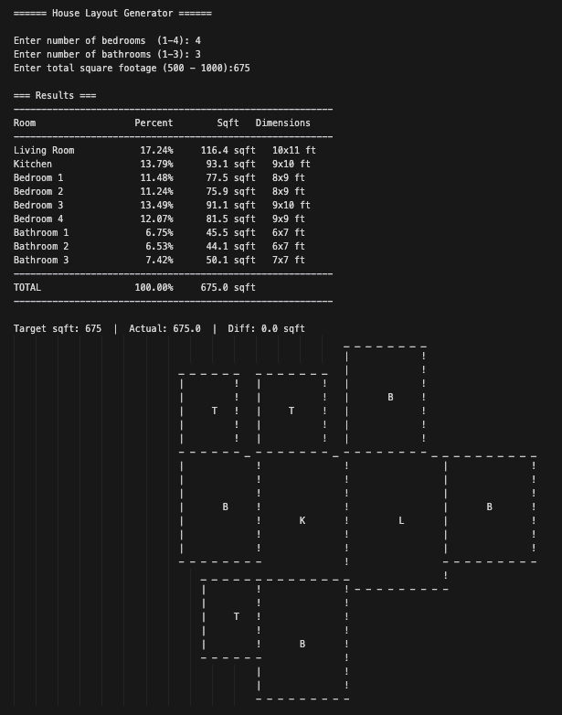

C++ House Generator
A C++ console project that procedurally generates ASCII house floor plans from user input: bedroom count, bathroom count, and total square footage.
What it does
The app turns high-level requirements into a randomized floor plan layout on a 2D grid. Given the number of bedrooms and bathrooms plus target square footage, it computes room sizes, places rooms based on adjacency rules, and prints a complete ASCII map of the house.
Core architecture
Room: abstract base class where each room type overridespick_anchor()andget_default_size_ratio()for custom placement and sizing behavior.House: owns room objects and applies the percentage-based "how much space does each room get?" logic.DimensionGenerator: converts square footage into integer grid dimensions and randomly splits category percentages across individual rooms.Grid+Position:Gridstores the map asmap<(x,y), char>and renders ASCII;Positionhandles attaching rooms by checking which sides are free.
Design decisions
- Polymorphism keeps placement logic clean, because room-specific anchor rules live in each room class instead of a giant conditional block.
- Separation of concerns keeps the system maintainable: sizing, placement, and logic per room are decoupled into different classes.
- Procedural variety comes from randomized per-room percentages and random free-side selection, so each generated house is different.
Extensibility
Adding a new room type is straightforward: create a new Room subclass and implement pick_anchor() (plus the default size ratio). The rest of the generation pipeline continues to work without restructuring existing logic.
Sample output
Console output showing room allocation plus a generated ASCII floor plan.

How to run locally
Build with CMake from the CppHouseGenerator project directory:
mkdir -p build
cd build
cmake ..
cmake --build .
Run the built executable from build, then enter bedrooms, bathrooms, and square footage when prompted to generate a new ASCII floor plan.